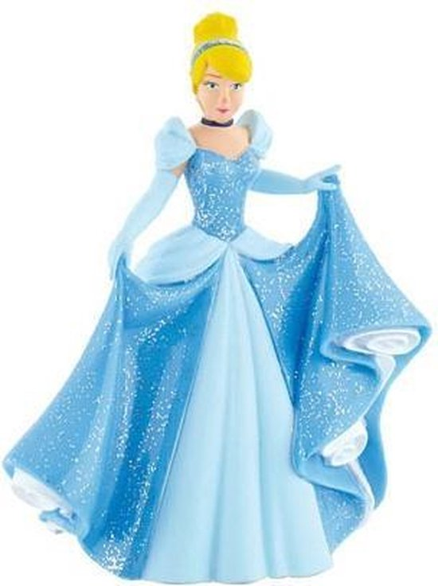
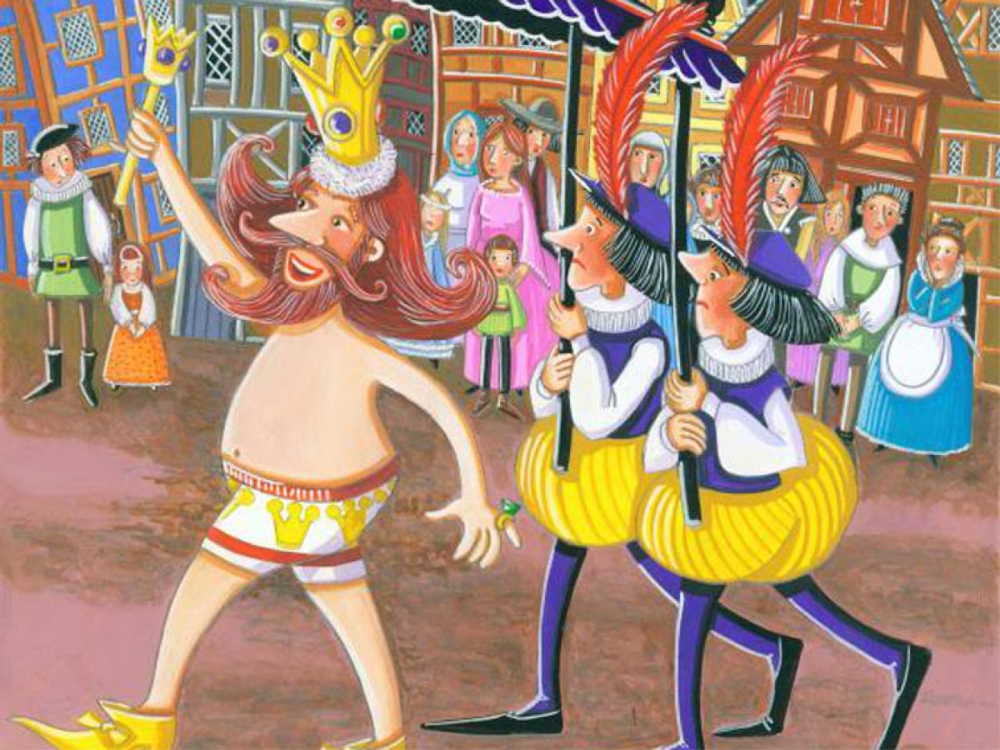
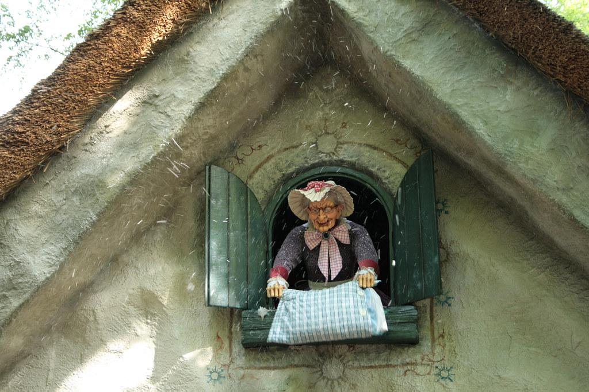
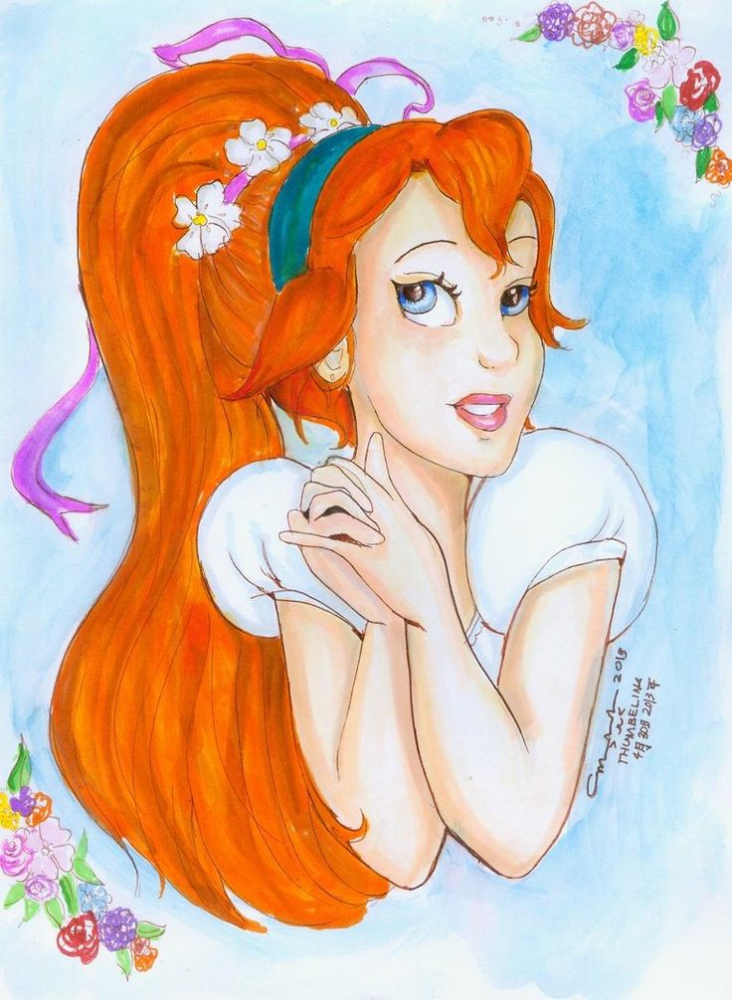
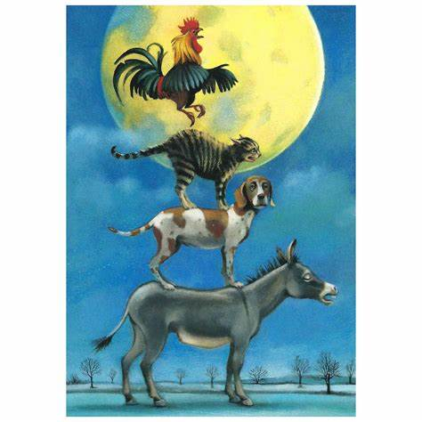

 Een meisje wordt verplicht al het huishoudelijke werk te doen voor haar gemene stiefmoeder en de twee gemene dochters hiervan. Omdat ze alle vuile karweitjes moet opknappen, zoals 's ochtends het aanmaken van de haard, wordt ze spottend 'Assepoester' genoemd. Op een dag geeft de koning middels een brief bevel dat alle meisjes uit het hele land naar het bal moeten komen, opdat zijn zoon, de prins, kan trouwen met het meisje van zijn dromen. Dan blijkt nogmaals de onrechtvaardige stiefmoederlijke behandeling van Assepoester. De dochters van de gemene stiefmoeder krijgen mooie jurken, Assepoester moet het met lompen stellen en wordt zo verhinderd naar het bal te kunnen gaan. Een goede fee tovert haar echter een baljurk met glazen muiltjes en tovert een pompoen en een stelletje muizen om tot een koets met paarden. Om middernacht zal de betovering echter verbroken worden. Assepoester charmeert de prins uitermate, maar niemand herkent haar. Om middernacht ontvlucht zij het paleis. Dit gebeurt ook de tweede en derde nacht, waarbij ze de derde nacht een van haar glazen muiltjes verliest als ze vlucht. De prins vindt het muiltje en zweert dat hij het bijzondere meisje zal vinden om met haar te trouwen. Vele meisjes proberen uit alle macht hun voet in het schoentje te wringen. Uiteindelijk past de schoen alleen Assepoester, waardoor alles goed afloopt. De stiefmoeder en zussen vragen om vergiffenis en Assepoester had altijd al gehoopt dat ze van haar zouden houden.
 Het sprookje verhaalt van een keizer die erg op zijn uiterlijk is gesteld. Zijn kleermakers maken steeds duurdere gewaden, maar de keizer raakt steeds sneller verveeld. Uiteindelijk wil hij iets heel bijzonders en beveelt zijn kleermakers een gewaad te maken van "de stof die niet bestaat." Dan komen er een paar rondreizende kleermakers aan het hof die zeggen helemaal aan zijn wensen te kunnen voldoen. Zij hebben een uniek, nog nooit vertoond concept: een stof die alleen zichtbaar is voor slimme mensen. In werkelijkheid zijn het natuurlijk oplichters, want zo'n stof bestaat niet, maar de kleermakers vertrouwen erop dat niemand zal durven erkennen dat hij/zij de stof niet ziet - uit angst om voor dom uitgemaakt te worden. De keizer huurt ze in. Ze sluiten zich enkele dagen op in hun atelier en doden de tijd. Het ontbreekt ze aan niets. Daarna komen ze met veel misbaar en flauwekul naar de keizer en doen alsof ze een heel bijzonder kleed in hun handen hebben. Ze voeren een fantastische pantomime op en trekken de keizer het kleed aan dat alleen gezien kan worden door slimme mensen. De keizer aarzelt even, want hij ziet zijn eigen kleed niet, maar door de verrukte kreten van zijn kleermakers gaat hij er zelf ook in geloven, zeker als ook de eerste minister zegt dat het kleed hem prachtig staat! De keizer waant zich in peperdure kleren en hij wil natuurlijk niet dat mensen denken dat hij dom is. Hij vertoont zich dus aan zijn hovelingen en ook zij, bevreesd voor zijn woede-uitbarstingen, prijzen zijn nieuwe kleren de hemel in en loven zijn uitgekiende smaak. Zodoende besluit de keizer zich te vertonen aan het hele volk. Fier flaneert hij in de optocht, geheel naakt, terwijl het volk omvalt van verbazing, angst en plaatsvervangende schaamte, totdat een kind in het publiek roept: "Hee, kijk, de keizer loopt in zijn blootje!" Iedereen houdt de adem in voor de toorn van de vorst, maar plots wordt zijn kreet beantwoord. "Hij heeft gelijk! Hij loopt in zijn blootje!" Spoedig roept iedereen dit, maar de keizer weet niet anders te doen dan trots door te lopen, zelfs al ziet ook hijzelf de kleren niet. De dienaren blijven zijn sleep dragen, die er niet is. Al gauw had de keizer door dat de twee kleermakers hem bedrogen hadden. Toen hij terugging naar zijn paleis waren de twee al lang vertrokken met hun verworven rijkdommen. In verfilmingen en in de afbeeldingen in sprookjesboeken draagt de keizer vaak nog wel ondergoed, maar er zijn tegenwoordig ook uitgaven waarbij hij helemaal naakt is.
 Een weduwe heeft twee dochters, één is mooi en ijverig en de ander lui en lelijk. Ze houdt meer van de lelijke en laat de andere dochter al het werk doen. Het meisje zit elke dag bij een put te spinnen. Door het harde werken komt er bloed van haar handen aan de spoel. Als ze deze wil schoonmaken, omdat zij bang is dat ze zal worden bestraft, valt de spoel in de put. Ze duikt de spoel achterna en komt zo in een wonderland terecht. Er bloeien duizenden bloemen en er staat een oven vol met brood, dat roept om eruit gehaald te worden. Het meisje haalt alle broden uit de oven en komt dan bij een boom vol appels. Ze haalt de appels van de boom door deze te schudden en komt dan bij een klein huisje, waar een oude vrouw naar buiten kijkt. Het meisje wordt bang van de grote tanden, maar de oude vrouw roept haar en zegt dat ze het goed zal hebben als ze bij haar blijft. Ze moet wel het bed van de oude vrouw netjes opmaken en flink uitschudden, zodat het op aarde sneeuwt. Het meisje komt in dienst en doet tevreden haar werk, in ruil heeft zij ook een goed leven. Maar na een tijdje krijgt ze heimwee en ze vraagt of ze weer naar boven mag. De poort wordt voor haar geopend en als ze eronderdoor loopt, valt er een gouden regen omlaag. Vrouw Holle geeft haar nog de spoel terug en het meisje gaat naar huis. De haan begroet haar als gouden meisje en haar moeder en zuster ontvangen haar. Als de moeder hoort hoe haar dochter aan rijkdom is gekomen, wil ze dat haar andere dochter dit ook overkomt. Het meisje gaat bij de put spinnen en prikt zichzelf aan een doornhaag om bloed tevoorschijn te halen. Zij komt in de wonderwereld voor dezelfde beproevingen te staan, maar wil ze niet uitvoeren. Ze wordt niet bang van de grote tanden van Vrouw Holle, omdat ze hier al over heeft gehoord. Als hulpje van Vrouw Holle voert ze alleen de eerste dag iets uit omdat ze nog aan de beloning denkt, maar daar blijft het bij. Ze wordt na een tijdje ontslagen en gaat met Vrouw Holle naar de poort en daar wordt ze overgoten met pek.
 Het verhaal gaat over een klein meisje, geboren uit een bloem. Het lieflijke meisje, dat slaapt in een notendop bedekt met rozenblaadjes, wordt ontvoerd door een pad uit het huis van de vrouw die de bloem plantte waaruit Duimelijntje kwam. Ze wordt uitgehuwelijkt aan de lelijke zoon van de pad en wordt gevangengezet op een lelieblad, maar slaagt erin te ontsnappen met hulp van enkele vissen en een vlinder, die allen vertederd zijn door het kleine meisje. Bertall ill La Petite Poucette1.png Ze wordt weer ontvoerd, ditmaal door een kever die met haar wenst te trouwen. De kevermeisjes vinden haar echter helemaal niet knap, ze heeft zelfs geen voelsprieten!. De hele zomer lang leeft Duimelijntje alleen in het bos, waar de vogeltjes voor haar zingen omdat ze het zo'n lief meisje vinden. Maar wanneer de winter komt, trekken de vogels weg naar het zuiden en verdorren alle planten en krijgt ze het erg koud. Duimelijntje wordt in huis opgenomen door een oud veldmuisvrouwtje, die een goedgevulde keuken en een mooie woonkamer heeft. Door de liedjes die Duimelijntje zingt en de verhalen die ze vertelt, wordt de oude, blinde buurman van de veldmuis, een mol, heimelijk verliefd op haar. In een gang van de mol ligt een schijnbaar zieke zwaluw, waar de mol het niet hoog mee opheeft. De mol heeft een hekel aan de zon en vindt vogels, die enkel zingen, maar waardeloze nietsnutten. Stiekem verzorgt Duimelijntje de zwaluw omdat hij voor haar tijdens de zomer mooie liedjes had gezongen en door de warme zorgen wordt de zwaluw weer snel beter en vertrekt naar het zuiden. Hij wil Duimelijntje meenemen, maar ze weigert omdat dit de veldmuis die zo goed voor haar zorgt pijn zou doen. Het jaar nadien wordt Duimelijntje uitgehuwelijkt aan de mol en mag de buitenlucht niet meer zien. Wanneer het weer winter wordt en Duimelijntje erg verdrietig is, komt ze de zwaluw weer tegen en vertrekt deze keer wél mee naar het zuiden. In dat prachtig gebied trouwt ze uiteindelijk met de bloemenkoning, een mooie jongen even groot als Duimelijntje. Hij en zijn volk leven in de bloemen, die ze beschermen. Ze leven nog lang en gelukkig.
 Een ezel ontsnapt aan zijn baas, die hij al zijn jaren trouw heeft gediend, als hij hoort dat hij wegens zijn ouderdom zal worden gedood en besluit stadsmuzikant in Bremen te worden. Tijdens zijn vlucht sluit een hond, die te oud is om aan de jacht deel te nemen, zich bij hem aan. Zijn baas wilde hem doodslaan en daarom is hij gevlucht. De ezel zal de luit spelen en de hond zal op de pauken slaan. Later ontmoeten ze een kat met een gezicht als een oorwurm; de tanden van de kat worden stomp en hij zit liever achter de haard dan op muizen te jagen. De vrouw des huizes wilde de kat daarom verzuipen. Ook de kat gaat mee richting Bremen. De drie vluchtelingen ontmoeten een haan die zit te kraaien, het geluid gaat door merg en been. De haan voorspelt mooi weer omdat het de dag van Onze Lieve Vrouw is, maar de vrouw des huizes wil de haan in de soep doen omdat er op zondag gasten komen. "The Waits of Bremen and the Borders", George Cruikshank, 1893 Ook de haan wordt uitgenodigd mee te gaan naar Bremen en samen mooie muziek te maken. 's Avonds komen ze in een bos en de ezel en de hond gaan onder een grote boom liggen. De kat en de haan zoeken een plek in de takken, de haan vliegt naar boven en kijkt naar de vier windstreken. Hij ziet een lichtje en roept zijn makkers, ze gaan naar die plaats en komen bij een felverlicht rovershuis. De ezel kijkt naar binnen en ziet een gedekte tafel, hij gaat met zijn voorpoten op de vensterbank staan. De hond gaat op zijn rug en op hem klimt de kat, de haan vliegt naar boven en gaat op haar kop zitten. Dan gaan ze allemaal hun muziek maken en springen door het raam, waarna de rovers wegvluchten. Ze dachten dat er een spook binnenkwam. Ze doen zich te goed aan het eten en doen het licht uit, waarna de ezel op de mesthoop gaat liggen. De hond gaat achter de deur en de kat bij de warme as van de haard, de haan gaat op de hanenbalk zitten. De roverhoofdman ziet dat het licht uit is gegaan en de rovers gaan terug naar het huis. De verspieder hoort geen geluid en gaat naar de keuken, hij houdt een zwavelstokje bij de ogen van de kat omdat hij denkt dat dit gloeiende kooltjes zijn. De kat springt op en spuugt en krabt, waarna de hond de verspieder in zijn been bijt. De ezel trapt hem nog met zijn achterpoot en de haan kraait vanaf de balk. De verspieder waarschuwt dat er een heks in het huis zit, bij de deur zit een man met een mes en op het erf is een zwart monster met een houten knuppel. Op het dak zit de rechter die roept om de schurk en de rovers durven het huis niet meer in. De vier Bremer muzikanten gaan er niet meer uit.